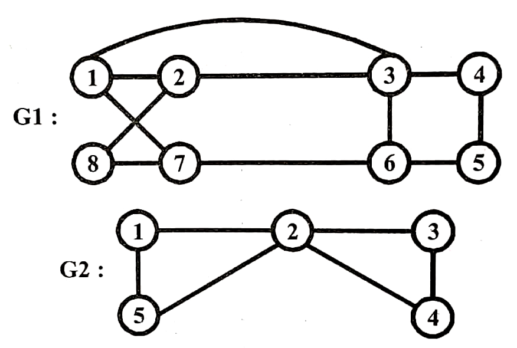

Q.7: What is Hamiltonian cycle? Write an algorithm to find all Hamiltonian cycle in graph?
Answer:
Let G=(V, E) be a connected graph with n vertices. A Hamiltonian cycle is a round-trip path along n edges of G that visits every vertex once and returns to its initial or starting position. In other words if a Hamiltonian cycle begins at some vertex Vi Î G and the vertices of G are visited in the order V1, V2, ......, Vn+1, then the edges (Vi, Vi+1) are in E, 1<=i<n, and the Vi are different except for Vi and Vn+1, which are equal. Hamiltonian cycle was suggested by Sir William Hamilton.
Fig. shows a graph G1 which contains the Hamiltonian cycle 1, 2, 8, 7, 6, 5, 4, 3, 1. The graph G2 does not contain any Hamiltonian cycle.
There is no easy way to find whether a given graph contains a Hamiltonian cycle. We have backtracking algorithm that finds all the Hamiltonian cycles in a graph. The graph may be directed or undirected. Only distinct cycles are output.

Algorithm – The backtracking solution vector (X1, ...,Xn) is defined so that xi represents the ith visited vertex of the proposed cycle. Now we have to find how to compute the set of possible vertices for Xk if X1, ...., Xk-1, have already been chosen. If k = 1 the x, can be any of the n vertices. To avoid printing the same cycle n times, we require that xy = 1. If 1 <k<n, then xk can be any vertex v that is distinct from X1, X2, .....,Xk-1 and v is connected by an edge to Xk-1. Only the vertex Xn be the one remaining vertex and it must be connected to both Xn-1 and X1. Algorithm 1 NextValue (k) determines a possible next vertex of the proposed cycle.
Algorithm 1 Generating a Next Vertex
1. Algorithm NextValue
(k)
2. // x [1 : k-1] is a
path of k – 1 distinct vertices. If
3. ll x [k] = 0, then no vertex has as yet been assigned to x [k].
After
4. // execution, x[k] is assigned to the next highest numbered
vertex
5. // which does not already appear in x [1 : k-1] and is connected
by
6. // an edge to x [k - 1]. Otherwise x [k] = 0. If k= n, then
7. // in addition x [k] is connected to x [1].
8. {
9. repeat
10.{
11. x[k] : = (x [k] + 1) mod (n+1); //Next vertex.
12. if (x [k] = 0) then return;
13. if (G[x [k – 1], x [k]] + 0) then
14. {// Is there an edge ?
15. for j := 1 to k-1 do if (x [j] = x[k]) then break;
16. // Check for distinctness
17. if (j = k) then // If true, then the vertex is distinct.
18. if ((k <n) or ((k = n) and G [x
[n], x [1]] + 0))
19. then return;
20. }
21. } until (false);
22. }
Algorithm 2 is used to find all Hamiltonian cycles. This algorithm is started by first initializing the adjacency matrix G [l: n, 1:n), then setting x [2 : n] to zero and x[1] to 1, and then executing Hamiltonian (2).
Algorithm 2 Finding
All Hamiltonian Cycles
1. Algorithm Hamiltonian (k)
2. // This algorithm uses the recursive formulation of
3. // backtracking to find all the Hamiltonian cycles
4. // of a graph. The graph is stored as an adjacency
5. // matrix G[1 : n, 1:n). All cycles begin at node 1.
6. {
7. repeat
8. { // Generate values for x [k].
9. NextValue (k); // Assign a legal next value to x[k].
10. if (x [k] = 0) then return;
11. if (k = n) then write (x [1 : n]);
12. else Hamiltonian (k+ 1);
13. } until (False);
14.}
Travelling salesman problem is a problem of finding tour with minimum cost. This tour is a Hamiltonian cycle. For the simple case of a graph all of whose edge costs are similar, Hamiltonian will determine a minimum-cost tour if a tour exists. If the common edge cost is C, the cost of a tour is en as there are n edges in a Hamiltonian cycle.
Hamiltonian Cycle's
Complexity –
We can define Hamiltonian-cycle as a formal language as –
HAM-CYCLE = {<G>: G is
a Hamiltonian graph}
If we use the reasonable encoding of a graph as its adjacency
matrix, the number m of vertices in the graph is Ω(√ n), where
n= |<G>| is the length of the encoding of G. There are m! possible
permutations of the vertices, and therefore the running time is Ω
(m!) = Ω (√n!) = Ω (2√n), which is not
θ(nk)
for any constant k.